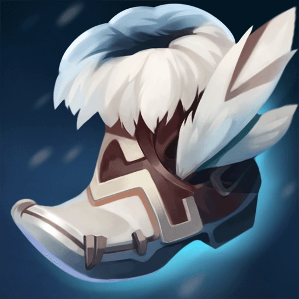
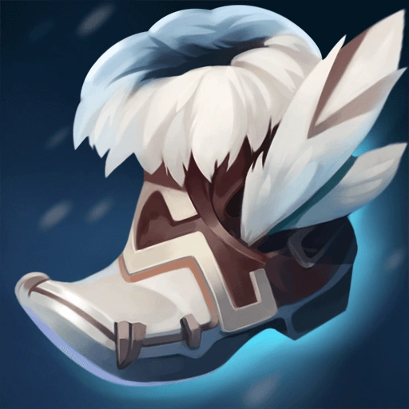
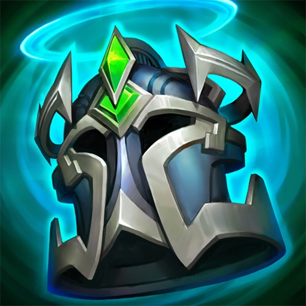
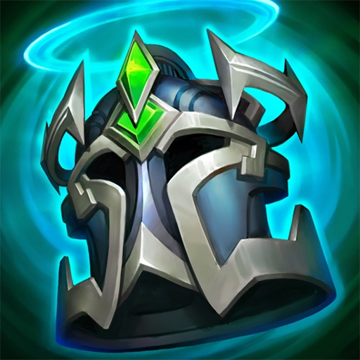
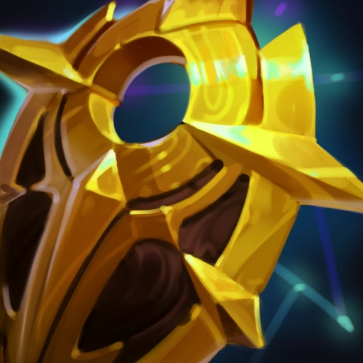
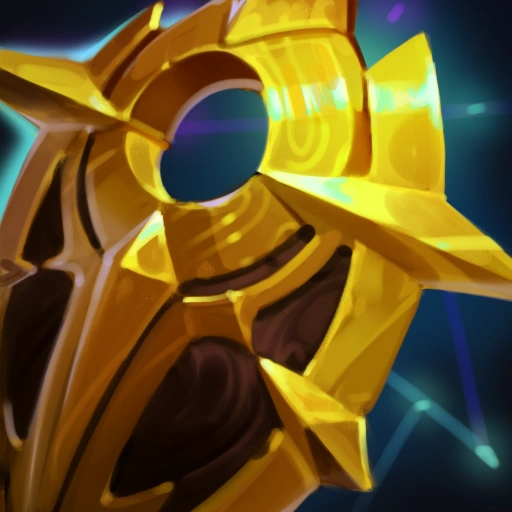

Kai'sa loves engage supports. Engage supports are best due to how agressive they play, not in the lane but in late game tam fights. uring those fights Kai"sa likes to jump in with them. So, the three best engage supports, are the best supports for Kai'sa. Those are:
Alistar: 1.Solstice Sleigh|2.Boots of Swiftness|3.Trailblazer|4.Locket of the Iron Solari|5.Knight's Vow|6.Zeke's Convergence

 


 


Nautilus: 1.Celestial Opposition|2.Mercurys Treads|3.Locket of the Iron Solari|4.Knight's Vow|5.Thornmail|6.Zeke's Convergence
 



Leona: 1.Solstice Sleigh|2.Plated Steelcaps|3.Locket of the Iron Solari|4.Zeke's Convergence|5.Knight's Vow|6.Frozen Heart